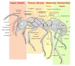
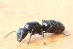

Hauptseite
Herzlich Willkommen beim AmeisenWiki!
Du bist gerade auf die größte Sammlung freier, aktueller Texte im deutschsprachigen Raum rund um das Thema "Ameisen" und "Ameisenhaltung" gestoßen. Das AmeisenWiki ist eine Enzyklopädie zum Thema Ameisen, die nicht von einer festen, bezahlten Redaktion, sondern von freiwilligen Autoren verfasst wird.
Viel Spaß auf den Seiten des AmeisenWikis!
Alles für den Neueinsteiger | Risiken der Haltung ausländischer Ameisen | Bekämpfung | Formicarien | Haltung | Nahrung | Nesttypen | Lexikon
Rechtzeitiges Lesen im Ameisenwiki hilft Dir: die Ameisenhaltung richtig zu planen, Geld für Ameisen und ganz besonders für unnötiges Zubehör zu sparen, unnötigen Tierverbrauch zu verringern, Enttäuschungen zu vermeiden.
{kind=link}

_Königin1.jpg.html){kind=link}

{kind=link}
Beteiligen
Du hast eine spezielle Frage zu Ameisen? Stell sie hier... Questions may be posted in English, too!
Diese Seite lebt von ihrer offenen Struktur. Das heißt, jeder ist eingeladen Fehler zu verbessern, neue Beiträge zu schreiben, Bilder hinzuzufügen (bitte Urheberrechte beachten), und vieles mehr.
Alle Artikel sind das Werk freiwilliger Mitwirkender. Sofern du Texte schreiben oder Fehler beseitigen kannst, kannst auch du hier mitarbeiten. Du brauchst keine Hilfsmittel, die benötigten technischen Vorkenntnisse und Anforderungen sind minimal. Wer sofort loslegen will, wirft am besten einen Blick auf das Handbuch. Dort erfährst du, wie du Artikel bearbeitest, und welche weiteren Funktionen ausgeführt werden können.
Deine Vorschläge machen diese Seite noch ausführlicher.
Alle benötigten Artikel |
Zu überarbeitende Artikel |
Anregungen |
Löschkandidaten |
Rechtliches
Das AmeisenWiki enthält derzeit 3.605 Seiten und 791 vollständige Artikel.
Die neusten drei Artikel sind:Es sind aktuell keine zutreffenden Einträge vorhanden.